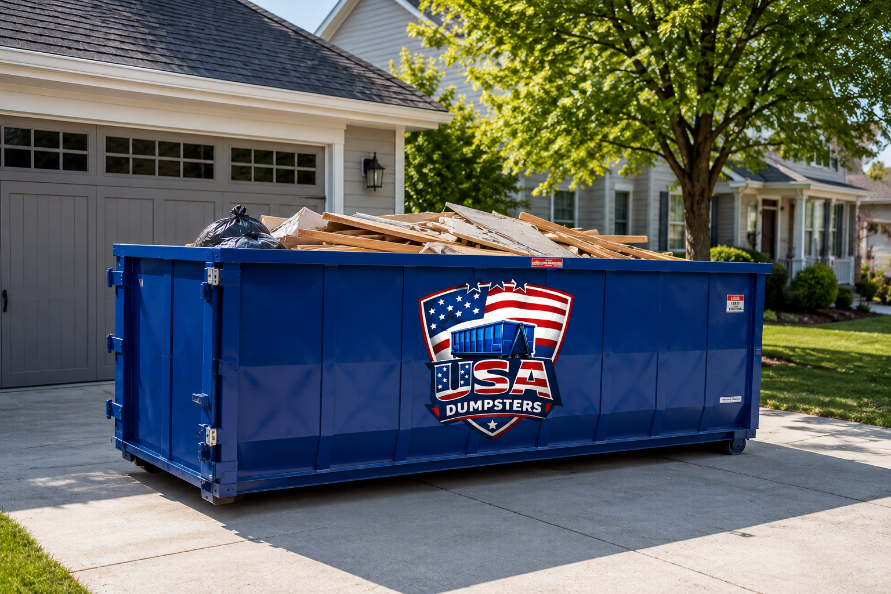

Residential Dumpsters

- Evictions
- Hoarding Cleanouts
- Storm Cleanups
- Estate Cleanups
- Garage Cleanouts
- Seasonal Decluttering
- Yard Cleanups
- Multi Room Cleanouts
Homeowners, landlords, and renters rely on our dumpsters for garage cleanouts, estate cleanups, moving prep, home renovations, and more! If you're clearing out old furniture, appliances, or yard waste, we've got the right-sized dumpster for the job.